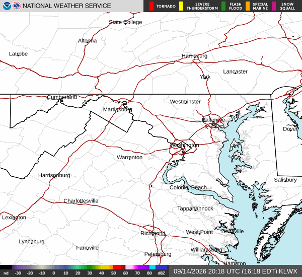

Official NWS KLWX radar loop. Live picture, not a vibe graphic.
NWS / Readiness
Watch 605 is down. Tonight through Saturday is the storm window.
Actionable: no active NWS alerts on the Fredericksburg point as of 16:30 EDT. This afternoon isolated showers, high near 85, 20%. Tonight 100% storms and fog, low 66, quarter to half inch. Saturday 100% storms, high 80, three-quarters to one inch possible. Clarity, not fear. Have a basement/interior plan for the overnight-Saturday window; do not wait on social media.
Alerts: NWS alerts API returned an empty feature list for this point (updated 2026-08-21T20:30:39+00:00). Thursday Tornado Watch 605 expired 10 PM EDT. A watch that ended is not a warning that remains. · NWS forecast →
- No active watch/warning on this point — Thursday Tornado Watch 605 expired 10 PM
- Tonight is 100% storms (low 66); Saturday is 100% with up to an inch
- Saturday rainfall three-quarters to one inch possible — check drainage and outdoor plans